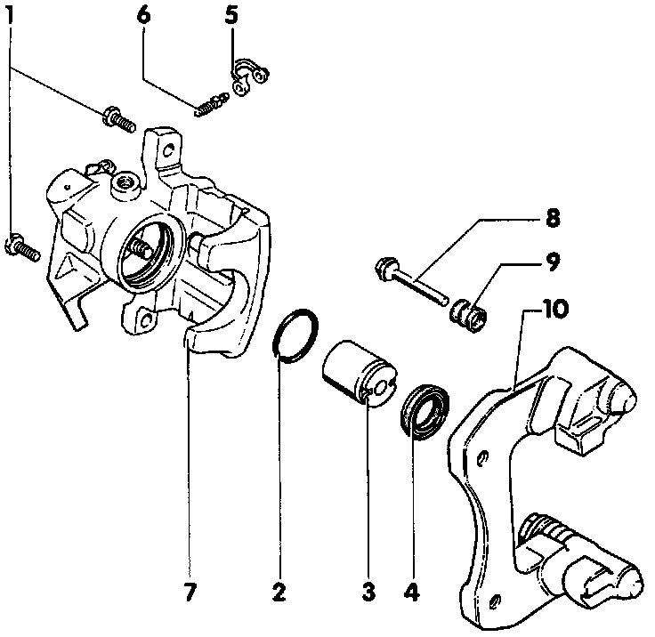
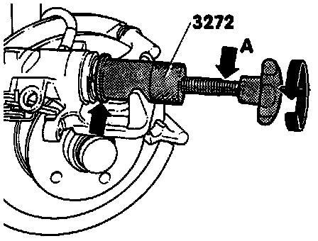
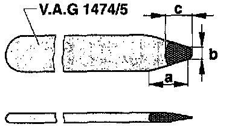
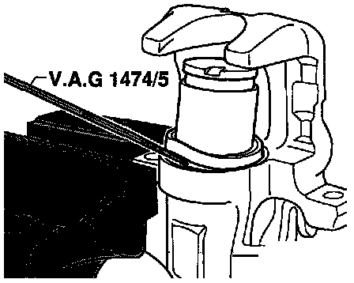
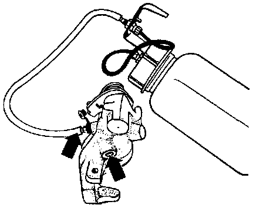

Rear
Rear brake caliper, servicing
Note: When repairing, apply a thin coat of brake fluid to cylinders, pistons and seals.
Install all parts in repair kit
Before installing caliper, it must be filled with brake fluid and pre-bled
New calipers are supplied filled with brake fluid and pre-bled
Exploded View Of Rear Caliper:

1. 35 Nm (26 ft lb)
Always replace
Counterhold guide bolts while loosening/tightening
2. Piston seal
Refer to Rear brake caliper piston, removing and installing
3. Piston
Refer to Rear brake caliper piston, removing and installing
4. Dust boot
Pull outer sealing lip onto piston
5. Cap
6. Bleeder screw
Apply a thin coat of brake cylinder paste before screwing in
7. Brake caliper
Replace if leaking fluid at parking brake lever
Fill with fluid and pre-bleed before installing
8. Guide pins
Lubricate with grease before installing protective cap
9. Protective cap
Install on guide bolts and brake pad carrier
10. Brake pad carrier
Supplied as replacement part with pre-lubricated guide bolts and protective caps.
If protective caps or guide bolts are damaged install repair kit and use grease pack supplied to lubricate guide bolts.
Rear brake caliper piston, removing & installing
Removing
Rear Caliper Piston Removal:

- Turn knurled wheel of tool anti-clockwise to remove piston.
NOTE: If piston is difficult to turn use open-end 13 mm wrench on flats provided (arrow -A-).
CAUTION! The collar of the tool (arrow) must be next to the caliper piston
Rear Caliper Seal Removal:

- Carefully remove seal using modified wedge VAG 1474/5.
Modifying Wedge Tool VAG 1474/5

- Reshape wedge point size in area -a-.
- Width -b- = 6 mm (1/4 inch)
- Reshape wedge point to length -c-.
- Length -c- = 10 mm (3/8 inch)
- Remove burrs from point of modified wedge.
Installing
Rear Caliper Piston Dust Seal Installing:

- Install dust boot onto piston.
Piston Into Rear Caliper Installing:

- Hold piston in front of caliper housing and insert inner sealing lip into cylinder groove using VAG 1474/5.
Rear Caliper Piston Returning:

- Turn knurled wheel of tool clockwise to install piston.
CAUTION! The collar of the tool (arrow) must be next to the caliper piston
NOTE: If piston is difficult to turn use open-end 13 mm wrench on flats provided (arrow -A-).
- Install brake pads.
Rear Caliper Pre Bleeding:

- Open bleed screw (left arrow) and fill with brake fluid from container until brake fluid flows from brake line connection (right arrow) without bubbles.
- Close bleed screw.